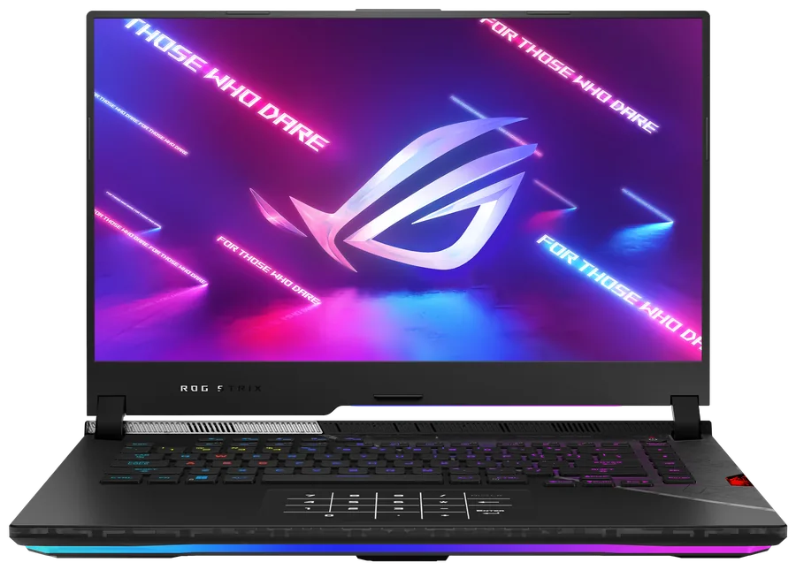
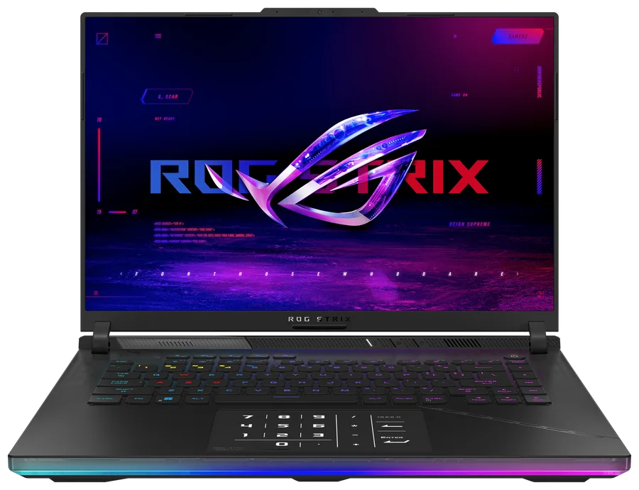
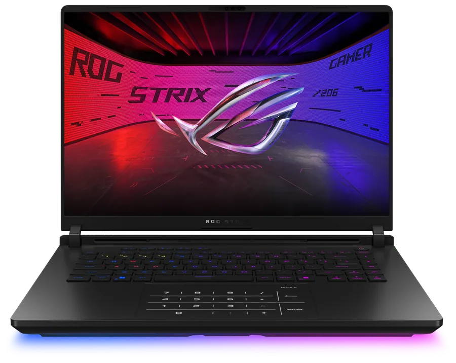
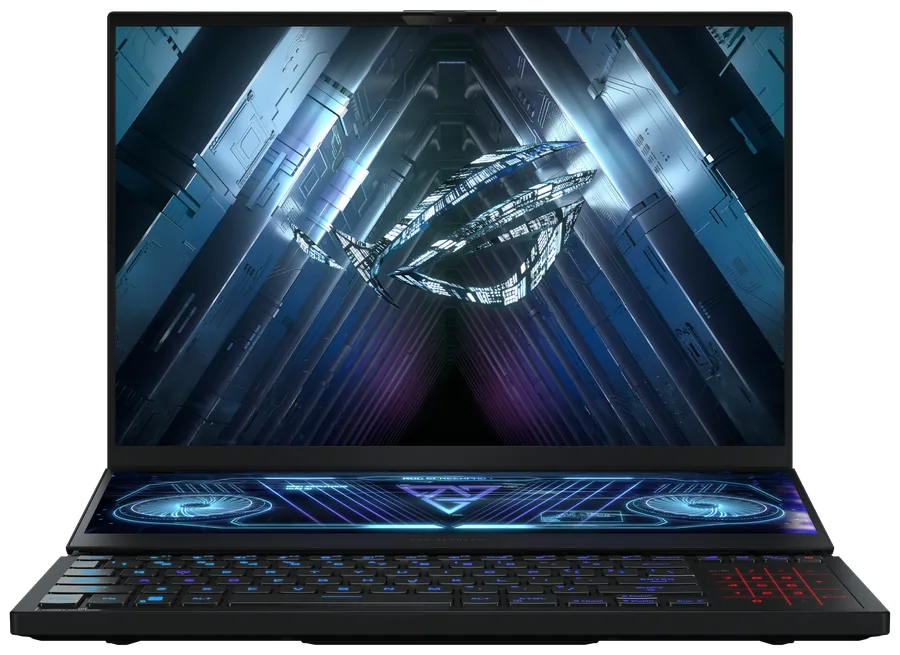
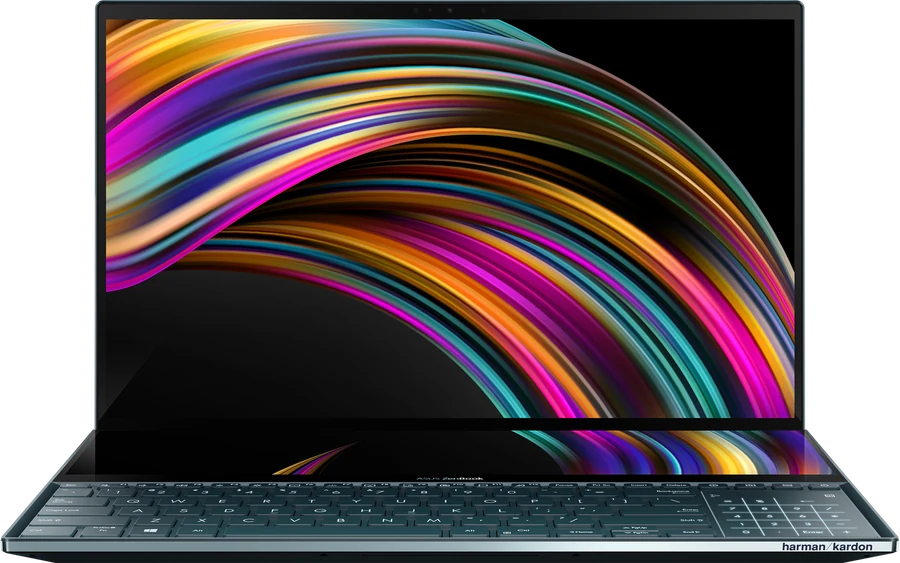

Nothing patched
evdev in, uinput out. No vendor module is replaced and no ACPI object is overridden, so a kernel upgrade never breaks it — and dnf remove restores stock behaviour.
Userspace driver · GPL-3.0
The touchpad is grabbed through evdev, contacts are mapped to numpad cells, key events go out through uinput. Stock kernel, stock ACPI — uninstall and the machine is back to factory.
No kernel module, no dkms rebuild after every update, no patched firmware table.
evdev in, uinput out. No vendor module is replaced and no ACPI object is overridden, so a kernel upgrade never breaks it — and dnf remove restores stock behaviour.
The deb is built on glibc 2.35 and covers Ubuntu 22.04–24.04 with Debian 12/13; the rpm is built on el9 and covers RHEL 9–10, Fedora and openSUSE. The release workflow installs the same file in every target before publishing.
DMI fields and the touchpad module decide the cell centres and keymap. No package name carries a model, so there is no wrong build to install. asus-numpad sku shows what it picked and why.
Mirrors the keyboard backlight by default through hidraw FEATURE 0x0d. Steps are editable in 0x41–0x48, and manual mode gives bright up|down|cycle.
44 touchpad modules map to keymaps from the vendor INF, each tagged verified, family or unsupported. An unfamiliar panel is refused instead of emitting the wrong key.
Interface and messages ship in en, zh-CN and zh-TW; the man page is English only. The locale comes from ASUS_NUMPAD_LANG, --lang, the config file, then the system locale.
Three stages in one small process; the kernel is untouched.
The multitouch evdev node of the touchpad is opened and grabbed, so contacts are read without the desktop pointer reacting to them.
Cell centres, press thresholds and the 62-frame long press come from AlgoParameters in the vendor file AsusNUMPADFilter.inf, adjusted per generation.
A virtual keyboard is created through uinput and emits KP_* events; the backlight byte goes out over hidraw or i2c afterwards.
$ asus-numpad check
ok touchpad ASUE1416 / 04F3:3275 (i2c-hid)
ok model g614 (DMI product_name G634JY)
ok layout hid-asue1416 verified
ok backlight hidraw FEATURE 0x0d, 4 steps
grab on · numlock sync · calc gesture long pressThe list below is the support range. A model id switches parameters by hand; a machine outside it is refused at startup.

g533ROG Strix SCAR 15 / Strix G15 (2022) — G533Z, G513R
2021 variants ship without a NumberPad and are not matched

g614ROG Strix SCAR 16 / Strix G16 (2023–2024) — G614, G634
Verified on G634JY

g615ROG Strix SCAR 16 / Strix G16 (2025–2026) — G615, G635
2026 keeps the same codes

gx550ROG Zephyrus Duo 15 / Duo 15 SE / Duo 16 (2020–2023) — GX550, GX551, GX650
Side-mounted pad; number mode is a keyboard key

ux582ASUS Zenbook Duo 14 / Zenbook Pro Duo 15 OLED (2020–2021) — UX582, UX482
Side-mounted pad; number mode is a keyboard key
Product images from the ASUS product pages, one for each model above.
The DMI model code is authoritative; marketing names are for orientation only. Pin a model with
asus-numpad sku g614 when the hardware cannot be read reliably, and asus-numpad sku auto to go back.
Add the repository once; upgrades follow your package manager. Packages are unsigned — hashes are in the index.
Debian 12/13, Ubuntu 22.04–24.04, Mint 21+
echo "deb [trusted=yes] https://raw.githubusercontent.com/asus-numpad/asus-numpad/main/repo/apt stable main" \
| sudo tee /etc/apt/sources.list.d/asus-numpad.list
sudo apt update
sudo apt install asus-numpad
Coming from RunningVAN/asus-numpad? The package name is the same but the source
differs, so an in-place upgrade does not happen: run sudo apt remove asus-numpad
(or dnf remove) once before switching. These repositories now carry 1.0.0 and later
only, and 1.0.0 sorts below the old 1.2.4, so no upgrade prompt will appear.
An ebuild-friendly static tarball is on Releases; so are deb, rpm, pkg.tar.zst and apk for offline installs.
ReleasesRead-only self test: devices, model, layout support level and the backlight channel.
asus-numpad checkThe daemon runs as a systemd unit; the CLI is for checking and tuning.
asus-numpad check # read-only self test
asus-numpad dump # raw event stream
asus-numpad run # foreground
asus-numpad --dump-config # effective configasus-numpad bright up|down|cycle
asus-numpad bright follow on|off
asus-numpad levels 2 0x46
asus-numpad led on|off|0x41asus-numpad layout --ids
asus-numpad layout auto
asus-numpad lang zh-CN
asus-numpad --lang en check
Config lives in ~/.config/asus-numpad/asus-numpad.json, or /etc/asus-numpad/ under root.
Keys left out keep the vendor defaults — numlock, mixed_mode, grab,
follow_keyboard_brightness, allow_unverified_layout and the brightness tables.
No. It sits beside them: it grabs the touchpad evdev node and adds a virtual keyboard. Keyboard backlight control from asusctl keeps working, and remove the package to drop the numpad layer.
Only while numpad mode is on. With grab off, clicks still reach the desktop; with mixed_mode on, keys and pointer work together once /dev/uinput is available.
A machine that matches no row is refused at startup: the gate exits with code 3 and prints the supported models, instead of running parameters meant for other hardware. --sku or asus-numpad sku <id> remains the way in, and asus-numpad check prints what to send along.
A key buys one signature check for a repository that holds a single package, and every user has to import a new key whenever it rotates. The index carries per-file hashes instead; if you need signature verification, install the package from Releases.
Supported, with a difference: the pad is a vertical strip to the right of the keyboard, so number mode is switched by a dedicated keyboard key instead of the 62-frame long press. Use numlock to pin the mode.
Neither. The daemon runs as a systemd --user unit; udev grants the touchpad and backlight nodes to the session. Log out and in once after the first install so the unit and the udev rule are picked up.
No. The daemon only talks to evdev and uinput, so it behaves the same under Wayland, X11 and a bare TTY. What matters is the session: without access to /dev/uinput there is nowhere for the keys to go.